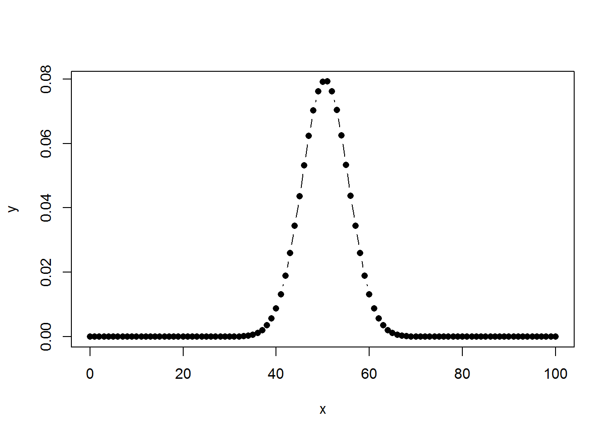
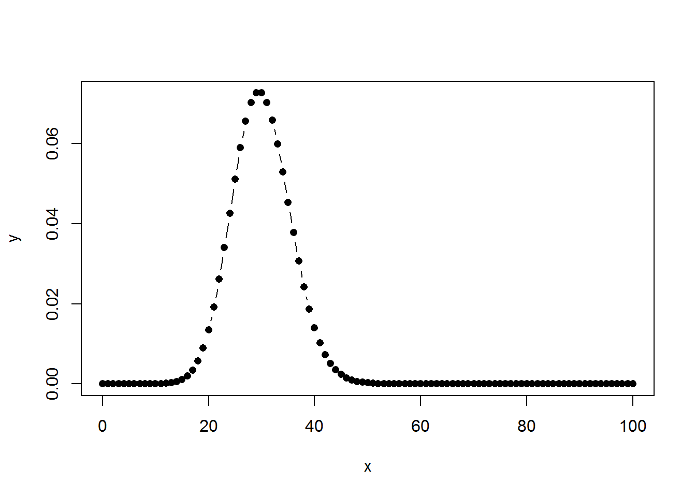
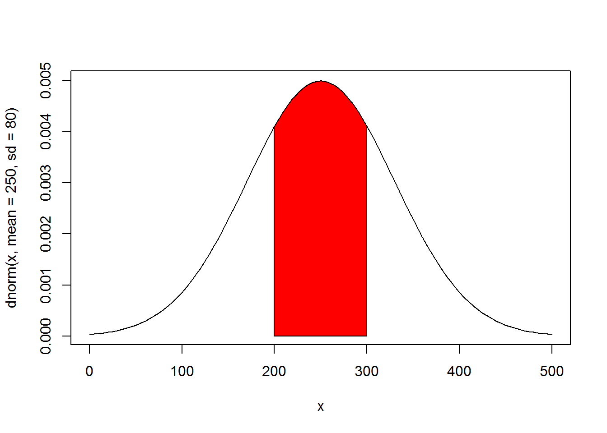

9 Midterm Exam
What to submit: An R notebook/html document that contains the script/output for each question.File name convention for submissions: lastname_firstname_midterm.zip. You have 60 minutes (8:30-9:30 am) to complete the exam. There will be a 10% penalty per 10 minutes for late submissions.
9.1 Question 1 (25 pt.)
The iris data set in the datasets package contains 150 cases (rows) and 5 variables (columns).
9.1.1 Question 1a
Randomly select half of the cases as training dataset and the remaining half as test dataset.
library(datasets)
df <- iris
set.seed(100)
nrow <- nrow(df)
id <- 1:nrow
train.index <- sort(sample(id,nrow/2))
train.index## [1] 9 12 15 20 21 22 24 25 26 27 28 31 32 33 34 37 39
## [18] 42 45 47 48 51 52 53 55 57 58 59 64 67 69 70 71 72
## [35] 75 78 81 82 84 85 86 88 89 91 92 95 96 99 102 103 104
## [52] 109 110 111 112 114 117 118 119 120 121 123 124 125 127 129 133 135
## [69] 137 138 141 143 146 148 149test.index <- id[-train.index]
test.index## [1] 1 2 3 4 5 6 7 8 10 11 13 14 16 17 18 19 23
## [18] 29 30 35 36 38 40 41 43 44 46 49 50 54 56 60 61 62
## [35] 63 65 66 68 73 74 76 77 79 80 83 87 90 93 94 97 98
## [52] 100 101 105 106 107 108 113 115 116 122 126 128 130 131 132 134 136
## [69] 139 140 142 144 145 147 150train.df <- df[train.index,]
test.df <- df[test.index,]
if(!(require(DT))) install.packages("DT")
library(DT)
datatable(train.df,caption = "Training dataset",options = list(pageLength = 5))datatable(test.df,caption = "Test dataset",options = list(pageLength = 5))9.1.2 Question 1b
Find out the number of each species (setosa, versicolor, and virginica) in the training and test datasets, respectively.
table(train.df$Species)##
## setosa versicolor virginica
## 21 27 27table(test.df$Species)##
## setosa versicolor virginica
## 29 23 239.2 Question 2 (25 pt.)
Assume that the probabilities of boy and girl births are 0.505 and 0.495, respectively.
9.2.1 Question 2a
What’s the probability of having exactly 50 boys out of 100 births? (X = 50)
answer_2a <- dbinom(50,size = 100,prob = 0.505)
print(answer_2a)## [1] 0.07919226The answer is 0.0791923
9.2.2 Question 2b
What’s the probability of having more than 60 boys out of 100 births? (X > 60)
answer_2b <- pbinom(60,size = 100,prob = 0.505,lower.tail = FALSE)
print(answer_2b)## [1] 0.02241835The answer is 0.0224184
9.2.3 Question 2c
What’s the probability of having between 40 and 60 boys out of 100 births? (40 < X ≤ 60)
answer_2c <- diff(pbinom(c(40,60),size = 100,prob = 0.505))
print(answer_2c)## [1] 0.9550539The answer is 0.9550539
9.2.4 Question 2d
Plot the density function of the number of boy births out of 100.
x <- 0:100
y <- dbinom(x,size = 100,prob = 0.505)
plot(x,y,type = "b",pch=16)
9.3 Question 3 (25 pt.)
If cars arrive randomly at a traffic light following posission distribution at the rate of five every ten seconds.
9.3.1 Question 3a
What the probability that exactly 30 cars arrive in the next minute (60 seconds)? (X=30)
answer_3a <- dpois(30,lambda = 5*6)
print(answer_3a)## [1] 0.07263453The answer is 0.0726345
9.3.2 Question 3b
What’s the probability that more than 40 cars arrive in the next minute (60 seconds)? (X>40)
answer_3b <- ppois(40,lambda = 5*6,lower.tail = FALSE)
print(answer_3b)## [1] 0.03230957The answer is 0.0323096
9.3.3 Question 3c
What’s the probability that between 20 and 40 cars arrive in the next minute (60 seconds)?
answer_3c <- diff(ppois(c(20,40),lambda = 5*6))
print(answer_3c)## [1] 0.9324058The answer is 0.9324058
9.3.4 Question 3d
Plot the density function of 0-100 cars arriving in the next minute (60 seconds).
x <- 0:100
y <- dpois(x,lambda = 30)
plot(x,y,type = "b",pch=16)
9.4 Question 4 (25 pt.)
The number of customers at a bank each day is found to be normally distributed with mean µ = 250 and standard deviation σ=80.
9.4.1 Question 4a
What fraction of days will have more than 300 customers? (X>300)
answer_4a <- pnorm(300,mean = 250,sd = 80,lower.tail = FALSE)
print(answer_4a)## [1] 0.2659855The answer is 0.2659855
9.4.2 Question 4b
What number of customers will be exceeded 10% of the time?
answer_4b <- qnorm(0.1,mean = 250,sd = 80,lower.tail = FALSE)
print(answer_4b)## [1] 352.5241The answer is 352.5241252
9.4.3 Question 4c
What fraction of days will have between 200 and 300 customers? (200 < X≤ 300)
answer_4c <- diff(pnorm(c(200,300),mean = 250,sd = 80))
print(answer_4c)## [1] 0.4680289The answer is 0.4680289
9.4.4 Question 4d
Plot the density function and create the shaded area between 200 and 300 customers.
curve(dnorm(x,mean = 250,sd = 80),from = 0,to = 500)
cord.x <- c(200,seq(200,300,by = 1),300)
cord.y <- c(0,dnorm(seq(200,300,by = 1),mean = 250,sd = 80),0)
polygon(cord.x,cord.y,col="red")